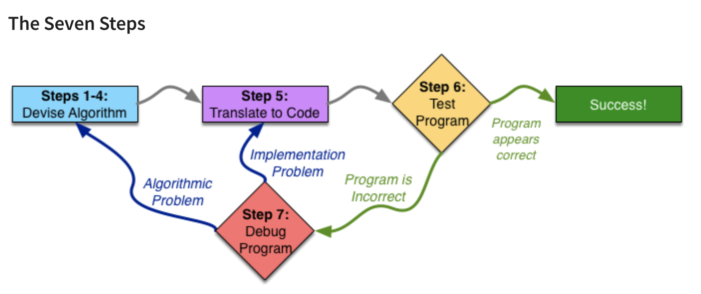
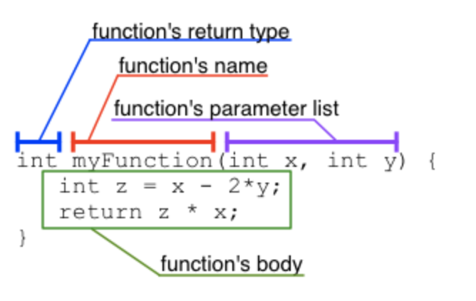
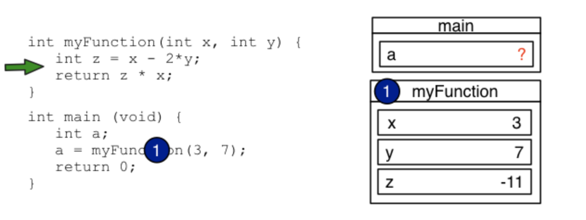
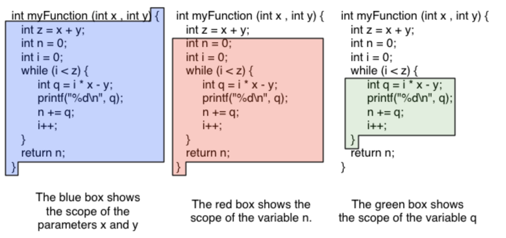
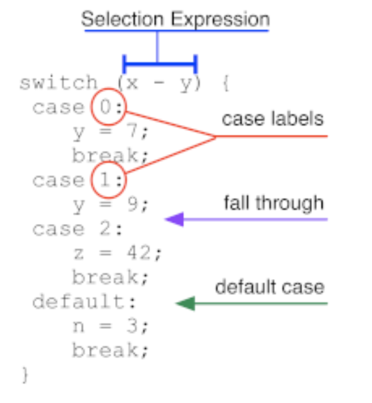

2. Programming Fundamentals¶
Module 1 Introduction¶
1. 主要内容¶
这个module主要讲的用7个步骤（the Seven Steps）来系统的解决编程问题，并且规划出有针对性且正确的算法。
2. Seven Steps¶
I 课程的架构¶
学习怎么program，学习如何阅读代码
Course 1: seven steps -- 阅读代码中的syntax(句法，句法规则) and semantics(语义学；语义论)
Course 2: editing, compiling and running code; testing and debugging
Course 3: Pointers, arrays, and strings; recursion
Course 4: 和用户以及系统交互（IO系统）；动态内存规划（dynamic memory allocation）
II Programming: Plan First, Then Code¶
可以将 a large programming task 分解成several small tasks；30分钟的planning 可以相当于几个小时的try to make the code work properly
将写代码比做造模天大楼，需要现有完整的approved蓝图才能开始造：come up with a complete plan (algorithm) first and build (implement in code) second
编程的核心是解决一类问题而不是解决一个问题：当我们想知道7是不是prime的时候，我们会写一个程序去判断任意一个N是不是prime
我们需要确定特定的输入值，规定输入值的类型
在coding前，我们需要确定确切的algorithm
III Overview of the Seven Steps¶

3. The First Four Steps¶
Step 1: work an example yourself¶
就是自己想出一个特定的例子，比如在写一个判断N是不是质数的例子里，先假定N是7，然后把判断7是质数的过程想出来并且最好画一个图（draw a diagram）

Domain knowledge: 领域知识
Step 2 write down what you just did¶
就是写下一组清晰的说明，其他人都可以遵循，以重现你刚刚解决的特定问题实例的答案
难点在于会忽略一些小的细节
Step 3 generalize your steps¶
首先，我们必须取我们使用的特定值并用参数的数学表达式代替它们
概括步骤的第二种常见方法是寻找重复——相同的步骤反复重复
If you find it difficult to see a pattern, it is recommended to repeat steps 1 and 2 on different examples.
Step 4 test your algorithms¶
4. Examples¶
给了一个关于格子的example，可以进行直观地找规律
Module 2 Reading Code¶
1. 主要内容¶
主要学会阅读、理解、使用函数、条件语句、循环和其他基础的技巧
2. variables and expressions¶
先读一些好的代码，才能自己写好代码
programs track most of their state in variables
I decalaration¶
The name of a variable may be any identifier.
Identifier: the formal programming term for a word that can be used to name something in any programming language.
在C里面，identifier可以包含任何字母、数字和下划线_;只能用字母和下划线进行开头，不能使用数字开头！
一句declaration是以分号（semicolon）进行结尾的：
int myVariable;
II assigning a variable (assignment statement)¶
一个statement的左边是lvalue
中间是一个equals sign (叫assignment operator)
右边是rvalue
Declaration 和 Assignment 可以合并成一个statement
III expression¶
expression的定义：an expression is a combination of values and operations which evaluates to a value
% modular：取余数，the modulus operator evaluates to the remainder when dividing the first operand by the second; 19%15 = 4 (读作19 modulus 或者mod 15 = 4)
整数除法得到的是整数，而且是向下取整的整数，因为int类型只能存储整数：floor division，round down the result，5 / 2 = 2
3. functions¶
如果我们重复写了两段类似的代码，那么我们就需要将代码概括成function了
优点：
- can re-use
- abstraction
declaring a function and call a function

I Frame¶
A frame (或者叫stack frame，因为他们位于call stack):

the expression involves a function call
II Scope¶
Scope 是用来解决一个大项目里有相同名称的变量问题的
In C, the scope of a local variable begins with its declaration and ends at the closing curly-brace (})
C里面一个局部变量的作用域是从declartion开始到}结束

4. printing¶
int x = 3;
int y = 4;
printf("x + y = %d", x + y);
escape sequences: 即转义符
The most common escape sequence you will encounter is \n, which means “newline”.
\ is the escape sequence for a literal backslash
\t：tab
Format specifier: 类似%d这种符号
5. conditional statements¶
clause：从句
I if/else¶
"then" clause
"if" clause
II switch/case¶
注意只有在case里面遇到break;之后，程序的运行才会跳到下一个花括号！没有break的话，会继续运行下一个case！
或者碰到return 的话也可以直接跳出判断语句
举例：
# include <iostream>
using namespace std;
int main () {
int x;
cin >> x;
switch (x) {
case 1:
printf("1\n");
break;
case 2:
printf("2\n");
case 3:
printf("3\n");
break;
case 4:
printf("4\n");
}
return 0;
}
运行结果：
输入1
1
输入2
2
3

III shorthand¶
Shorthand 又叫syntactic sugar
最常见的简略表达方式：
x += y;
x -= y;
x *= y;
x /= y;
x ++;
++x;
x--;
--x;
6. loops¶
for repitition